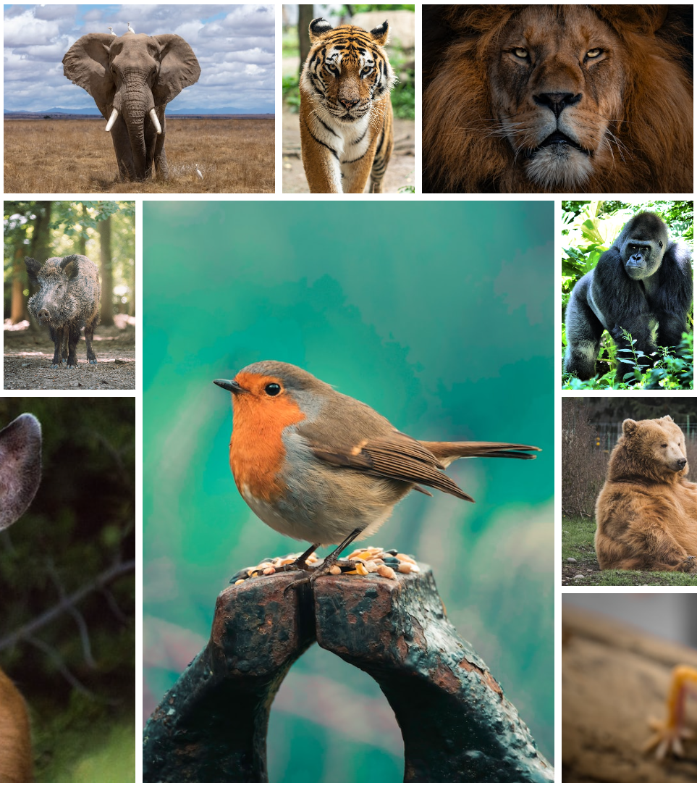
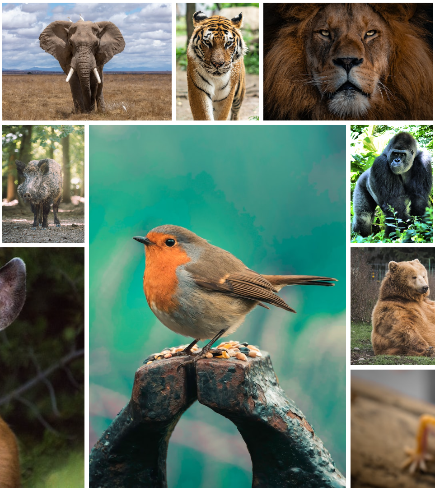
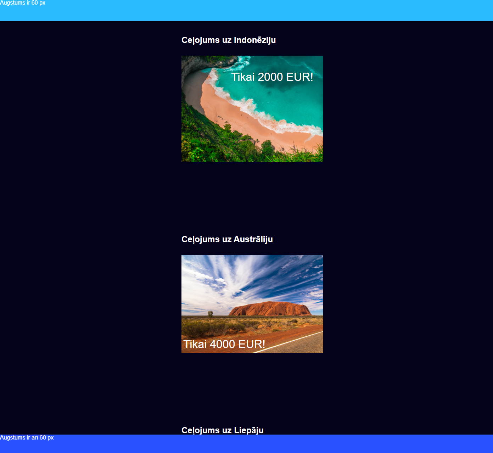
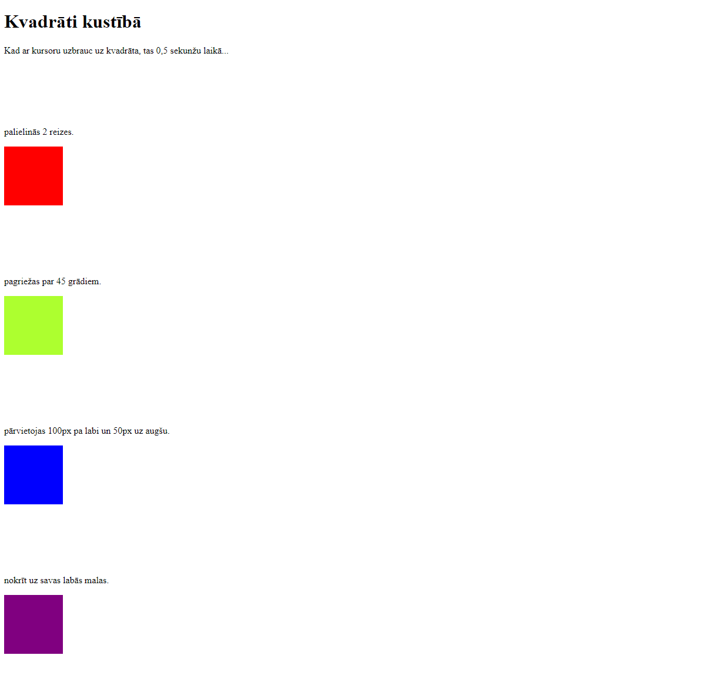

Grid of animals
No 12 savvaļas dzīvnieku attēliem kuri iegūti no Unsplash, es izveidoju dzīvnieku kolāžu izmantojot CSS Grid, lielākoties izmantojot īpašibas grid-column un grid-row.


This is my portfolio website, that is still being worked on, when i make a suggestions
tab you will be able to give me your suggestions on how i can improve.
No 12 savvaļas dzīvnieku attēliem kuri iegūti no Unsplash, es izveidoju dzīvnieku kolāžu izmantojot CSS Grid, lielākoties izmantojot īpašibas grid-column un grid-row.
Šeit man bija uzdevums pievienot header un footer, un novietot cenas uz attēliem. Beigu beigās tiku galā izmantojot īpāšību position: absolute un tā elementa vecākam position: relative, tādējādi tu vari elementu brīvi novietot kur vēlies!
Šajā uzdevumā mērķis bija kustināt kvadrātu atbilstoši nosacījumiem, lietojot tikai CSS! To var panākt izmantojot transform īpašības, kā rotate, translate un transform-origin.
